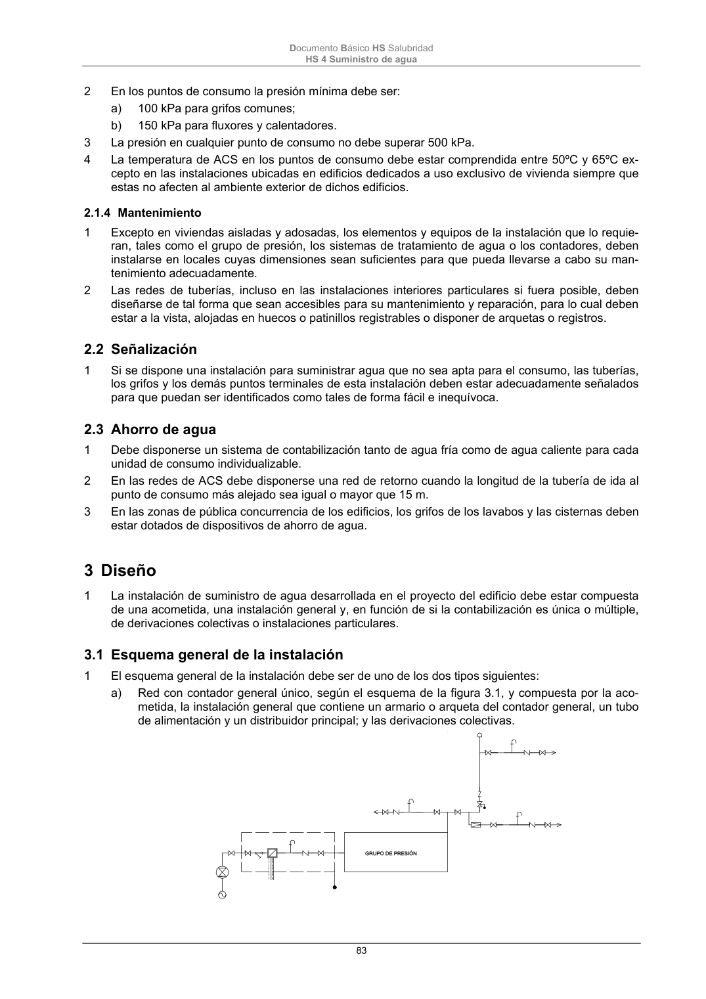

DB-HS · 3.1 Esquema general de la instalación · versión 2022-06-14 · capa oficial
Formatos: JSON compacto · Markdown · PDF fuente
Ámbito del documento · texto del ámbito · documento y tablas
ID técnico a0181 · PDF pág. 83-84 · jerarquía no validada por persona · contrastado con el literal de la página 83 (candidato tipográfico); no validado por persona · padre: a0180
3.1 Esquema general de la instalación 1 El esquema general de la instalación debe ser de uno de los dos tipos siguientes: a) Red con contador general único, según el esquema de la figura 3.1, y compuesta por la aco- metida, la instalación general que contiene un armario o arqueta del contador general, un tubo de alimentación y un distribuidor principal; y las derivaciones colectivas. Documento Básico HS Salubridad HS 4 Suministro de agua 84 Figura 3.1 Esquema de red con contador general b) red con contadores aislados, según el esquema de la figura 3.2, compuesta por la acometida, la instalación general que contiene los contadores aislados, las instalaciones particulares y las derivaciones colectivas. Figura 3.2 Esquema de red con contadores aislados

PDF fuente redistribuible: copia fiel enlazada en esta página (SHA256 verificado).